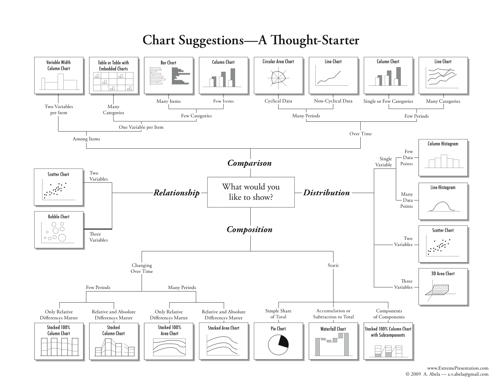

Chapter 1
Contents
Chapter 1¶
In this day and age, understanding data is the key to making the best decisions for any business. However, the amount of information that’s available at any time can be overwhelming for the most data-savvy person.
So what’s the key to making data-driven decisions? Finding the most important data and formatting it in a way that’s easy to understand. This can change, depending on who will view the data. If you’re an industry expert, you may find complex data easier to understand. If you’re presenting data to less well-versed stakeholders at your company, you may need to simplify it before sharing it with others.
One of the easiest ways to make data easy to understand for technical and non-technical audiences is to create a dashboard that easily displays all of your data visualizations in one place.
(https://www.tableau.com/learn/articles/dashboards/what-is)
Learning Intentions¶
In this chapter, we intend for you to learn:
Learning Intentions
What is a dashboard?
How to use dashboards?
Principles of effective dashboard design
Ways users can interact with dashboards
How to make dashboards accessible?
The importance of dashboards in data analysis projects
What is a dashboard?¶
A dashboard is a type of graphical user interface which often provides at-a-glance views of key performance indicators (KPIs) relevant to a particular objective or business process. (https://en.wikipedia.org/wiki/Dashboard_(business))
In essence, a dashboard is a board that displays information, usually as some key numbers and a few panels of plots.
How to use dashboards?¶
Principles of effective dashboard design¶
Common roles for data visualization include:
showing change over time
showing a part-to-whole composition
looking at how data is distributed
comparing values between groups
observing relationships between variables
looking at geographical data

(https://chartio.com/learn/charts/how-to-choose-data-visualization/) (https://extremepresentation.com/2010/12/tools/) (https://www.highcharts.com/chartchooser/)
Ways users can interact with dashboards¶
How to make dashboards accessible?¶
The importance of dashboards in data analysis projects¶
Quicker exploration than with coding.
Can enable people without programming skills to understand data better.
Can engage users to more than static visualisations.
Can lead to more engaging storytelling in data journalism.
When there is too much data, interactivity can allow us to look at subsets.
People can be interested in different things when they look at the same data.
Click the button to reveal the end result of this chapter!
Some hidden toggle content!

code to make this
App at the Start¶
As a framework for thi chapter, here is a zipped file of what your app should look like when we start.

Heading 2¶
Tip
text some more text…
Heading 4¶
App at the end¶
At the end of this chapter, here is a zipped file of what your app should look like